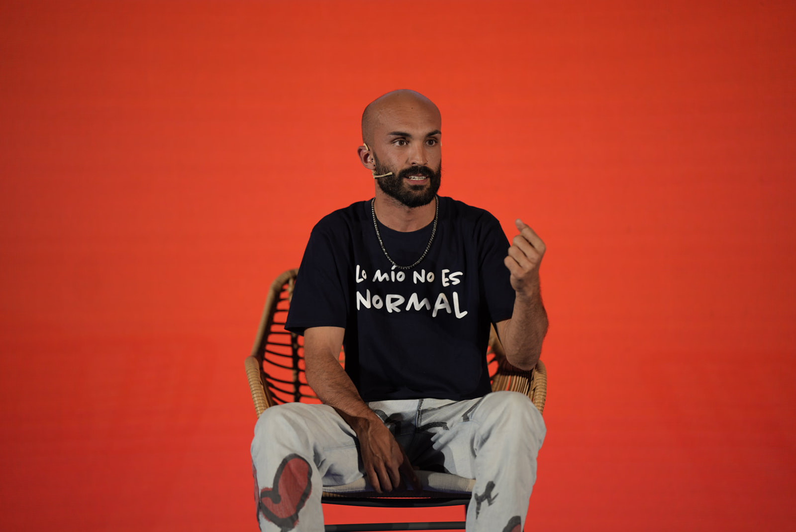
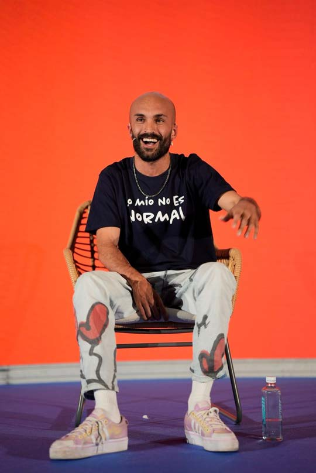
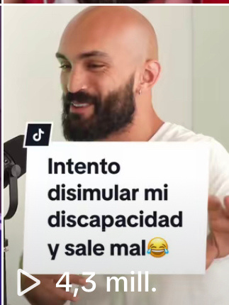

VER · Por qué lo mío no es normal
Y POR QUÉ "LO SUYO NO ES NORMAL"
Una conferencia para los jóvenes de tu instituto. Para hablarles de bullying, miedos, complejos y todo lo que pesa en una mochila a los 14 años — pero de verdad, sin paternalismos y sin discursos vacíos.
SU MISIÓN
"La verdadera discapacidad no es la que crees. Es el miedo.
Y eso lo tenemos todos. Sobre todo a los 15."



QUÉ PASA EN LA SALA
David no habla a los adolescentes desde arriba. Habla con ellos. Sin diapositivas aburridas, sin frases hechas, sin moralinas. Cuenta su historia — la de un chaval que nació con diparesia espástica, que se rio de sí mismo antes de que se rieran otros, y que un día decidió montar una fundación.
En cada sesión los móviles se quedan en el bolsillo. No porque alguien lo pida — porque lo que pasa en el escenario es más interesante que cualquier scroll. La gente que llegaba en plan "otra charla aburrida más" sale tres horas después hablando de cosas que no había hablado nunca.
Su estilo no es motivacional. Es conversacional, honesto, con mucho humor — y cuando toca, es duro. Trata temas que importan a esa edad sin endulzarlos ni convertirlos en panfleto.
DE QUÉ HABLA
Los temas que se quedan dentro y que casi nadie se atreve a tocar de frente. David los pone en el centro — con la credibilidad de quien los ha vivido en primera persona.
David fue ese chaval. El de la silla, el del nombre raro, el que cojeaba. Sabe lo que es. Lo cuenta sin victimismo y sin discursos. Habla a las víctimas, a los testigos y a los que lo hacen.
El cuerpo a los 14 es un campo de minas. David vive con un cuerpo que la gente mira. La verdad sobre qué pasa cuando dejas de querer esconderte y empiezas a habitarlo.
El núcleo de su mensaje. La verdadera discapacidad no es la física — es el miedo a destacar, a expresar lo que piensas, a decir "yo no soy normal y no pasa nada".
Más allá de la teoría que se ve en clase. Cómo se trata en realidad a quien es distinto, qué micro-conductas hacen daño y qué se puede hacer hoy mismo, en este recreo.
Ser distinto está hoy más castigado que nunca. David lo da la vuelta: lo distinto es lo que vale. Lo de siempre no construye nada — y la juventud lo sabe mejor que nadie.
Sin alarmismo y sin minimizar. David abre conversación sobre ansiedad, presión social y emocional, y normaliza pedir ayuda — desde la cercanía, no desde la pena.
YA LO HA HECHO. MUCHO.
David lleva años pisando institutos. Conoce el ritmo de una sala con 150 adolescentes y sabe cómo se mantiene esa atención sin caer en la fórmula fácil. No improvisa: cada formato lo ha probado en decenas de aulas distintas.
Ha trabajado con centros públicos y concertados, con orientadores, con AMPAS y con servicios municipales de juventud. Su lenguaje funciona igual en un instituto del centro de Madrid que en uno de la sierra.
David ha sido una de las voces seleccionadas por la Comunidad de Madrid para recorrer institutos de la región con su conferencia. Una experiencia que avala su capacidad para conectar con jóvenes de contextos muy distintos — y que da garantía institucional al formato.
POR QUÉ CONECTA CON LA JUVENTUD
David no es un profesor con micrófono. Vive en el mismo terreno digital que los chavales: TikTok, Instagram, YouTube. Su lema "Ser anormal es la hostia" lleva años circulando en las redes que ellos consumen. Cuando entra a un aula, ya saben quién es.
Pero a diferencia del influencer al uso, lo que les cuenta es incómodo de verdad: les habla del miedo, del bullying, de los complejos. De lo que normalmente se evita en los discursos motivacionales del salón de actos.

SIGUIENTE PASO
Cuéntanos qué instituto, qué curso y qué temas son los que más os preocupan ahora mismo. Programamos una primera reunión con el equipo de orientación y a partir de ahí concretamos fechas, sala y todo lo demás.
Hablemos →